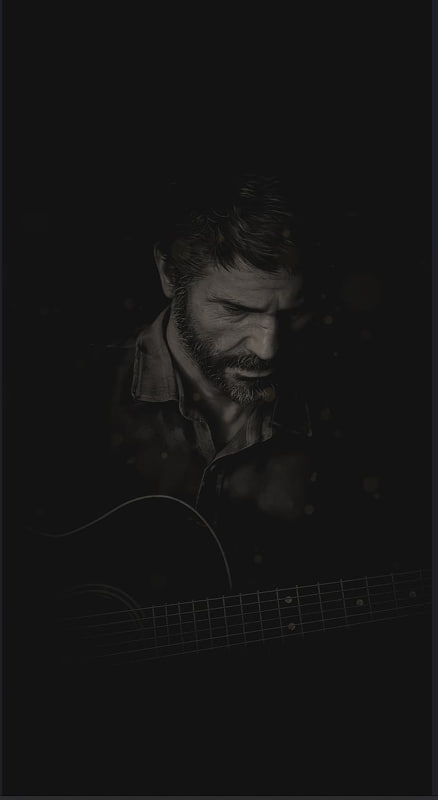

Выживший и наемник: Джоэл выжил в опустошенном грибковой инфекцией мире, где зараженные люди стали агрессивными хищниками. Он стал наемником, занимающимся различными заданиями в обмен на ресурсы и безопасность.
Сильный физический тип: Джоэл обладает физической силой и ловкостью, что делает его эффективным в борьбе с зараженными и другими угрозами в окружающем мире.
Измененный эмоциональный статус: Пережив трагические потери в прошлом, Джоэл часто предстает как мрачный и закрытый человек. Его персонаж развивается в ответ на события и отношения, особенно с молодой девочкой по имени Элли, которую он обязан защищать и провожать в путешествии.
Моральные дилеммы: Джоэл сталкивается с множеством моральных дилемм, принимая трудные решения в борьбе за выживание. Эти решения оказывают глубокое влияние на его характер и взаимоотношения с окружающими.
Эмоциональная глубина: Одна из сильных сторон персонажа - это его эмоциональная глубина. Джоэл предстает как сложная личность с богатым внутренним миром, что делает его персонажа особенно запоминающимся для игроков.
